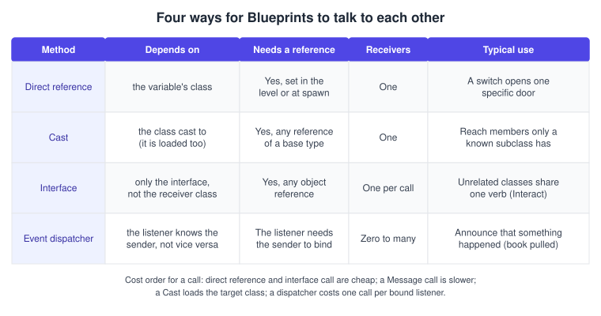
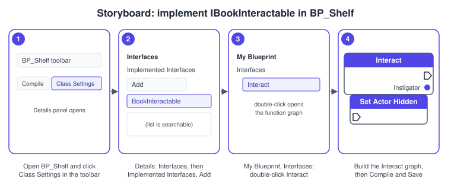
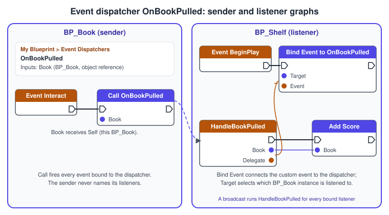

Blueprint Communication
|
This content was generated with the assistance of AI and should be verified against the official documentation before being relied on in production. |
A game is made of objects that must influence each other: the player pulls a book, the shelf notices, the score goes up, the HUD shows a title. Unreal gives Blueprints four ways to do this, and choosing the wrong one is the usual source of tangled graphs, slow loading and long compile times. This page explains each way, shows the equivalent C++ so that you can mix both worlds, and ends with a decision flow.
The facts were checked in November 2026 against the Unreal Engine 5.8 documentation (5.8 was released on 2026-06-17; the latest hotfix at the time of writing is 5.8.4). Everything here runs in the editor and in packaged builds on every platform Unreal supports; there are no platform requirements beyond a project that builds. The running example is the Bookshelf project (module Bookshelf, log category LogBookshelf) with the shared model bookshelf.glb: a character pulls an ABookActor off an AShelfActor, and the game state counts the pulls. The page that explains how the Blueprint editor itself works is Blueprints Visual Scripting, and the rules for exposing C++ to Blueprints are in C++ and Blueprints Together.
The four methods
Epic’s communication overview names four methods. Each answers a different question.
| Method | Question it answers | Shape |
|---|---|---|
Direct Blueprint communication |
I hold a reference to one specific object; how do I read or change it? |
One to one. A variable (or the return value of a spawn) points at the target, and you call its functions or set its variables. |
Casting |
I hold a reference of a general type; is it a particular subclass, and if so how do I reach what only that subclass has? |
One to one. The |
Blueprint interfaces |
Unrelated objects share a behaviour; how do I trigger it without knowing the receiver’s class? |
One to one per call, many receiver types. The caller depends on the interface, not on the receiver. |
Event dispatchers |
Something happened; how do others react without the sender knowing them? |
One to many. Listeners bind to the sender; the sender calls the dispatcher. |

Direct references
Direct communication is the most common method: one Actor holds a reference to another and uses it. The reference can arrive in several ways, and the way you pick decides how robust the link is.
-
An instance editable variable. Add a variable of the target type (for example a reference to
BP_Shelf), tick Instance Editable, and in the level select the placedBP_Bookand pick its shelf in the Details panel (a dropdown or the eyedropper). The link is stored in the level, so it survives saving and costs nothing at run time. It is the right tool for a fixed link such as a switch and its door. -
A spawn return value. Spawn Actor from Class returns the new Actor, so the spawner can keep it in a variable and call it directly. This is how
AShelfActorkeeps its books. -
An event parameter. Overlap, hit and damage events hand you the other Actor. The reference lives for the duration of the event and you usually cast or interface-call it.
-
A search. Get Actor Of Class, Get All Actors Of Class and Get All Actors With Interface look through the loaded world. They are convenient in
BeginPlay, and expensive when called every frame, so cache the result in a variable. -
A framework accessor. Get Player Character, Get Game State and Get Game Mode return objects that the engine already tracks (see Gameplay Framework for which exist on the server and on clients).
A direct reference couples the two assets: the Blueprint that holds a typed variable depends on that type. Keep the variable type as general as the use allows (a base class or an interface instead of a concrete Blueprint) and the coupling stays small.
Casting
A reference has a declared type and an actual type. Get Player Character is declared as a generic Character; the object behind it may be a BP_BookshelfCharacter with a Score variable. A Cast To node asks "is this object really that class (or a subclass)?". On success the typed output pin (As BP Bookshelf Character) exposes that class’s variables and functions and the execution continues from the success pin. On failure the Cast Failed pin runs and the output is empty.
-
Use a cast when you truly need members of one specific class, or when you must choose behaviour by type (an overlap with the librarian is not an overlap with the player).
-
Always wire the failed pin or branch on validity. A cast to the wrong type is normal (a book can overlap anything), not an error.
-
A cast names a class, so the asset that contains the node depends on that class, and the class loads with it. Casting to a large Blueprint from a small one drags the large one into memory. The Reference Viewer and Size Map in the editor show these links, and casting to a C++ base class instead of the Blueprint avoids the loading cost.
-
Prefer a cast to a C++ base class (
ABookshelfCharacter) over a cast to a Blueprint child (BP_BookshelfCharacter): every Blueprint child passes the base class cast, and the base class is tiny.
In C++ the same test is Cast<T>(Object), which returns nullptr when the object is not a T (or is nullptr), and CastChecked<T>(Object), which asserts in development builds when the cast must succeed. The Epic coding standard asks for pointers, not references, to UObject types, so the null result is easy to test.
#include "ShelfActor.h"
#include "BookActor.h"
#include "BookshelfCharacter.h"
#include "Bookshelf.h"
void AShelfActor::HandleReturnSlotOverlap(UPrimitiveComponent* OverlappedComponent,
AActor* OtherActor, UPrimitiveComponent* OtherComp, int32 OtherBodyIndex,
bool bFromSweep, const FHitResult& SweepResult)
{
// A cast to a native base class is cheap and works for every Blueprint child.
if (ABookActor* Book = Cast<ABookActor>(OtherActor))
{
Book->AttachToComponent(ShelfMesh, FAttachmentTransformRules::SnapToTargetNotIncludingScale,
GetNextFreeSlotName());
UE_LOG(LogBookshelf, Log, TEXT("%s returned to the shelf"), *Book->GetName());
}
else if (Cast<ABookshelfCharacter>(OtherActor))
{
// Walking into the slot is not an error, simply not a book.
return;
}
}Source: Epic: Casting Quick Start Guide and Epic: Coding Standard
Interfaces
An interface is a contract: a list of functions that any class may promise to implement. A caller that holds an Actor reference can ask "do you do this?" without knowing, or loading, the receiver’s class. The standard Epic example is a "use" button that must work on doors, lights and items that share no parent.
Blueprint interfaces
Create one from the Content Browser (Add > Blueprints > Blueprint Interface) and give it functions with inputs and outputs. A Blueprint interface cannot add variables, edit graphs or add components; it only declares signatures. A class implements it under Class Settings > Interfaces > Implemented Interfaces. The functions then appear under My Blueprint > Interfaces; a function without outputs becomes an event in the event graph, and one with outputs is implemented as a function graph (double-click it). Interfaces inherited from a parent class appear automatically under Inherited Interfaces.
There are three kinds of call node:
| Node | Behaviour |
|---|---|
Interface call (typed) |
Calls the function on an object whose type is known to implement the interface. Fast. |
Interface call on any object |
The target pin accepts any object; the call only does something if the object implements the interface. Use Does Object Implement Interface first when you need to know. |
Message |
Calls the function on any object. If the object does not implement the interface the call fails silently, and the Message call is slower than the other two. |
C++ interfaces
A C++ interface uses UINTERFACE instead of UCLASS and derives from UInterface. The U class is an empty placeholder that reflection needs; the I class holds the functions, and implementing classes inherit from the I class. Interface functions must be public. A function that Blueprints must be able to implement is a BlueprintNativeEvent (with a C++ default) or a BlueprintImplementableEvent (Blueprint only). The Blueprintable specifier on the UINTERFACE lets Blueprint classes implement it, and then every non-static function must be one of those two event kinds.
// BookInteractable.h
#pragma once
#include "CoreMinimal.h"
#include "UObject/Interface.h"
#include "BookInteractable.generated.h"
UINTERFACE(MinimalAPI, Blueprintable)
class UBookInteractable : public UInterface
{
GENERATED_BODY()
};
class BOOKSHELF_API IBookInteractable
{
GENERATED_BODY()
public:
/** Does the interaction. Returns true when something happened. */
UFUNCTION(BlueprintNativeEvent, BlueprintCallable, Category = "Bookshelf|Interaction")
bool Interact(AActor* Instigator);
};The implementing class overrides the generated _Implementation function. ABookActor below implements the interface and also owns the dispatcher that the next section explains.
// BookActor.h (excerpt)
#pragma once
#include "CoreMinimal.h"
#include "GameFramework/Actor.h"
#include "BookInteractable.h"
#include "BookActor.generated.h"
class ABookActor;
class UStaticMeshComponent;
DECLARE_DYNAMIC_MULTICAST_DELEGATE_OneParam(FOnBookPulled, ABookActor*, Book);
UCLASS(Blueprintable)
class BOOKSHELF_API ABookActor : public AActor, public IBookInteractable
{
GENERATED_BODY()
public:
ABookActor();
//~ Begin IBookInteractable
virtual bool Interact_Implementation(AActor* Instigator) override;
//~ End IBookInteractable
/** Blueprints bind to this with Assign or Bind Event. */
UPROPERTY(BlueprintAssignable, Category = "Bookshelf|Events")
FOnBookPulled OnBookPulled;
protected:
UPROPERTY(VisibleAnywhere, BlueprintReadOnly, Category = "Bookshelf")
TObjectPtr<UStaticMeshComponent> Mesh;
UPROPERTY(EditAnywhere, BlueprintReadWrite, Category = "Bookshelf")
FText BookTitle;
};// BookActor.cpp (excerpt)
#include "BookActor.h"
#include "Components/StaticMeshComponent.h"
#include "Bookshelf.h"
ABookActor::ABookActor()
{
Mesh = CreateDefaultSubobject<UStaticMeshComponent>(TEXT("Mesh"));
SetRootComponent(Mesh);
}
bool ABookActor::Interact_Implementation(AActor* Instigator)
{
if (!IsValid(Instigator))
{
return false;
}
UE_LOG(LogBookshelf, Log, TEXT("%s pulled by %s"), *GetName(), *Instigator->GetName());
OnBookPulled.Broadcast(this);
return true;
}Calling an interface from C++
Three calls exist, and only one of them is safe for every implementer:
-
IBookInteractable::Execute_Interact(Object, Instigator)is the generated static wrapper. It works whether the object implements the interface in C++ or in Blueprint. Use it. -
Object->Implements<UBookInteractable>()tests whether a class (in C++ or Blueprint) implements the interface. It is the check to make beforeExecute_. -
Cast<IBookInteractable>(Object)succeeds only for interfaces implemented in C++; a Blueprint implementation yieldsnullptr. Do not use it to decide whether to call.
TScriptInterface stores an object together with its interface pointer when a class must keep an interface-typed member.
// BookshelfCharacter.cpp (excerpt)
#include "BookshelfCharacter.h"
#include "BookInteractable.h"
#include "Engine/World.h"
#include "Bookshelf.h"
void ABookshelfCharacter::TryInteract()
{
const FVector Start = GetPawnViewLocation();
const FVector End = Start + GetControlRotation().Vector() * InteractDistance;
FCollisionQueryParams Params(SCENE_QUERY_STAT(BookshelfInteract), /*bTraceComplex=*/ false, this);
FHitResult Hit;
if (!GetWorld()->LineTraceSingleByChannel(Hit, Start, End, ECC_Visibility, Params))
{
return;
}
AActor* Target = Hit.GetActor();
if (IsValid(Target) && Target->Implements<UBookInteractable>())
{
const bool bDidSomething = IBookInteractable::Execute_Interact(Target, this);
UE_LOG(LogBookshelf, Verbose, TEXT("Interact on %s returned %d"), *Target->GetName(), bDidSomething);
}
}Procedure: implement the interface in BP_Shelf
The shelf Blueprint BP_Shelf should respond to Interact (it plays a creak sound when someone uses it). The numbered steps match the storyboard.
-
Open
BP_Shelfand click Class Settings in the toolbar. -
In the Details panel, open Interfaces, press Add under Implemented Interfaces and choose
BookInteractable. -
In My Blueprint, under Interfaces, double-click
Interact. Because the function returns a value it opens as a function graph. -
Build the graph (play the sound, return
true), then Compile and Save. To keep the C++ default in a Blueprint override of a native event, right-click the entry node and choose Add Call to Parent Function.

Event dispatchers
A dispatcher inverts the dependency. The sender declares an event with a signature (inputs) and calls it when something happens; any number of other Blueprints bind their own events to it. The sender has no idea who listens, so it can be reused in a level with no listeners at all.
Create one in My Blueprint with the plus button of the Event Dispatchers category and name it (OnBookPulled). In the Details panel add inputs with New (here a Book reference); inputs can be passed by reference, and Copy Signature from reuses another event’s inputs. The dispatcher’s own graph is locked. Four nodes use it:
-
Call fires every event that is bound to it (for example
Call OnBookPulled). -
Bind Event to adds an event to the dispatcher’s list. Its Event pin takes a custom event (or a Create Event node) whose signature matches.
-
Unbind Event from removes one event, and Unbind All Events removes every binding the dispatcher has.
-
Assign is a shortcut that creates the bind node and a matching custom event in one step.
Inside the Blueprint that owns the dispatcher the Target pin defaults to Self; in another Blueprint (a level Blueprint or the shelf) you must connect a reference to the specific instance to listen to. A dispatcher call with no bindings does nothing.

In C++ a dispatcher is a dynamic multicast delegate (declared with DECLARE_DYNAMIC_MULTICAST_DELEGATE_OneParam above) exposed with BlueprintAssignable, so Blueprints can bind and a C++ object can listen too. A C++ listener binds with AddDynamic, and the bound function must be a UFUNCTION, because dynamic delegates find their target by name. Here the game state listens to every book the shelf creates.
// BookshelfGameState.h (excerpt)
#pragma once
#include "CoreMinimal.h"
#include "GameFramework/GameStateBase.h"
#include "BookshelfGameState.generated.h"
class ABookActor;
UCLASS()
class BOOKSHELF_API ABookshelfGameState : public AGameStateBase
{
GENERATED_BODY()
public:
/** Called by the shelf for every book it creates. */
void WatchBook(ABookActor* Book);
UPROPERTY(BlueprintReadOnly, Category = "Bookshelf")
int32 Score = 0;
protected:
UFUNCTION()
void HandleBookPulled(ABookActor* Book);
};// BookshelfGameState.cpp (excerpt)
#include "BookshelfGameState.h"
#include "BookActor.h"
#include "Bookshelf.h"
void ABookshelfGameState::WatchBook(ABookActor* Book)
{
if (IsValid(Book))
{
// AddUniqueDynamic avoids a double binding if the shelf calls this twice.
Book->OnBookPulled.AddUniqueDynamic(this, &ABookshelfGameState::HandleBookPulled);
}
}
void ABookshelfGameState::HandleBookPulled(ABookActor* Book)
{
++Score;
UE_LOG(LogBookshelf, Log, TEXT("Score is now %d after %s"), Score, *GetNameSafe(Book));
}The delegate kinds, their macros and the native alternatives (AddUObject, AddWeakLambda) are covered on Unreal C++ Idioms.
Other ways to share information
The four methods do not cover every need. Three more patterns keep graphs small:
-
Blueprint function libraries. A library is a set of static functions that are not tied to any object, such as a
Format Book Titlehelper. In C++ it derives fromUBlueprintFunctionLibraryand every function is a staticBlueprintCallableorBlueprintPure. The shared logic is written once and any Blueprint calls it with no reference at all. -
Hub objects. The game state, the game instance and subsystems exist once and every object can reach them with a framework accessor. A
Scorethat several Actors read belongs onABookshelfGameState, not in an Actor that everybody has to find. See Gameplay Framework. -
Data objects. Data assets and tables hold values that many Blueprints read; they are not messages, but they remove the need to ask another Actor for a value. See Data-Driven Gameplay.
Choosing a method
Start from the relationship between the two objects, not from the node you remember.
A few rules of thumb follow from the table and the flow:
-
Many unrelated receivers, one verb: an interface. The caller stays small and new receivers need no change in the caller.
-
One sender, unknown listeners, something happened: a dispatcher. Do not make the sender call each listener by hand.
-
A fixed pair of objects in a level: a direct reference set in the Details panel.
-
Cast only when you need class-specific members, and prefer casting to the C++ base class.
-
Do not mix them to compensate for a missing design: if every Blueprint casts to every other, move the shared data to a hub object or an interface.
Common mistakes
-
Casting every frame to find the player. Cache the result of
Get Player Characterplus the cast inBeginPlayand use the variable; a cast onTickrepeats a type test that cannot change. -
Ignoring the failed cast. A cast failure is a normal outcome. An unwired failure pin hides bugs (the code silently does nothing for the wrong class).
-
Using Get All Actors Of Class on
Tick. It searches the loaded world each time. Search once, store, and refresh on a spawn or destroy event. -
Using Cast To Interface from C++. It returns
nullptrfor a Blueprint implementation. UseImplementsandExecute_. -
Forgetting to bind. A dispatcher with no bound listener does nothing; a bind placed on a path that never runs, or bound twice, is a common cause of silent or doubled reactions. Check the binding path first.
-
Binding to a destroyed sender. Dynamic delegates hold a weak reference, so a destroyed object is skipped, but a listener that binds in
BeginPlayand never unbinds on a long-lived sender keeps reacting after its own work is over. Unbind inEndPlay. -
Forgetting
UFUNCTION()on anAddDynamictarget. The bind compiles, and the function is never found at run time. -
Using
BlueprintImplementableEventin an interface and expecting a C++ body. ABlueprintImplementableEventcannot be overridden in C++; useBlueprintNativeEvent. -
A Message call where a typed call would do. The Message node is slower and fails silently when the object does not implement the interface.
Performance notes
-
A cast is a type test, cheap per call. The real cost is loading: a cast to a Blueprint class makes that class a hard dependency of the asset holding the node. Cast to C++ base classes or interfaces to keep Blueprint assets independent.
-
A direct call and a typed interface call cost about one function call. A Message call costs more and does nothing when the object does not implement the interface.
-
A dispatcher call costs one call per bound listener. Dynamic delegates are slower than native ones because they look functions up by name and are serializable; for high-rate events with only C++ listeners use a native multicast delegate.
-
Searches such as
Get All Actors Of Classscale with the number of Actors in the world. Cache their result. -
Passing large structs by value through event inputs copies them; pass by reference where the dispatcher or function allows it.
What changed recently
| Version | Change |
|---|---|
UE 5.0 (2022) |
Blueprint nativization was removed from the engine (the migration guide says it will not exist in UE5). Projects that used it keep working but may run slower and need other optimization approaches; move hot Blueprint logic to C++ by hand. |
UE 5.8 (2026) |
The communication overview in the 5.8 documentation still lists the same four methods (direct, event dispatchers, interfaces, casting). The 5.8 release notes announce no change to their behaviour. |
Where the books are outdated
Blueprints Visual Scripting for Unreal Engine (second edition, Marcos Romero and Brenden Sewell, Packt, August 2019) targets Unreal Engine 4.20 to 4.22. Its chapters 4 and 15 cover Blueprint communication and tips. The four mechanisms still exist in UE 5.8, so the concepts carry over; what to adjust is below.
| Book and chapter | What the book shows | What is current in UE 5.8 |
|---|---|---|
BPV (whole book) |
UE 4.20 to 4.22 editor and workflow |
UE 5.8. Menus, default templates and the content browser look different and |
BPV ch. 4 |
Direct references, casting, interfaces and event dispatchers as the way Blueprints communicate |
Unchanged: Epic’s 5.8 overview lists the same four methods. Prefer interfaces and dispatchers over casting to Blueprint classes to keep assets independent, and implement shared interfaces in C++ ( |
BPV ch. 15 |
Tips for working in Blueprints, written for UE 4 |
Any tip that relies on Blueprint nativization no longer applies: it was removed in UE 5.0. Move hot paths to C++ by hand (see C++ and Blueprints Together). |
See also
-
Blueprints Visual Scripting: graph types, events, functions and debugging.
-
C++ and Blueprints Together: exposing C++ so that Blueprints can use and extend it.
-
Unreal C++ Idioms: delegate kinds, containers, logging and asserts.
-
Gameplay Framework: the hub objects reachable by framework accessors.
-
Actors and Components: the objects that talk to each other.
-
UObject, Reflection and Garbage Collection: why dynamic delegates hold weak references.
-
Unity: Project Architecture and Design Patterns: the observer and event patterns Unity projects use for the same job.
-
C# delegates, lambdas and events: the closest conceptual neighbour of delegates and dispatchers.